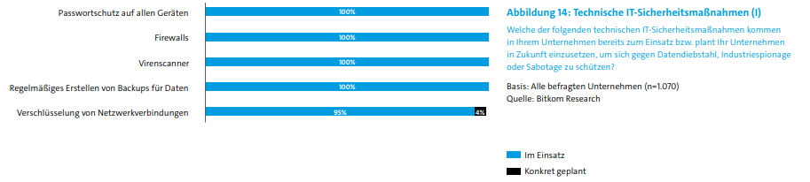

Sicherheitsvorkehrungen
Unternehmen machen den Diebstahl von Daten natürlich nicht leicht. Schon seit einigen Jahren haben alle Unternehmen
einen Basisschutz der Flächendeckend schützen soll. Es wird von Industrieunternehmen auf allen Geräten Passwortschutz,
Firewalls, Virenscanner und Backups eingesetzt. Diese reichen aber nicht aus, aufgrund der immer komplexer werdenden
Schadsoftwares. Neben den Schutzmaßnahmen werden auch nun eine Verschlüsselung von Netzwerkverbindungen von 95% der
Unternehmen eingesetzt.
Elektronische Zugangskontrollen zu Gebäuden und Maschinen werden von 68% eingesetzt und hinzu
kommt noch Protokollierung der Zugriffe und Schutz gegen Abhörung, die von jeweils 56% und 60% genutzt wird. Ein großer
Schutz ist auch bei jedem zweiten Unternehmen die Verschlüsselung der Datenträger. Individuell werden Datenverkehre von
E-Mails oder Benutzeridentifikation verschlüsselt oder auch Datenabfluss und Beobachten des Datenverkehrs von innen, der
verdächtigen Daten für die Firewall bereitstellt und sichert. Angriffe die durch den Virenscanner durchkamen, konnten
von der Firewall gestoppt werden.
Künstliche Intelligenz als Lösung?
Eine KI wäre ein großer Helfer was das Thema angeht, weil es Anomalien in Datenverkehr sehen kann und somit melden bzw. auch selbst Maßnahmen ergreifen kann.
Wie man in den Stichpunkten und in der zugehörigen Grafik sehen kann, tun sich Unternehmen leider schwer, besonders kleine Unternehmen haben es schwer, eine KI in ihrem Unternehmen zu integrieren. Sie ist entweder zu kostspielig und Zeitintensiv zu Programmieren oder es fehlt das Geld und/oder die Expertise, um es umzusetzen.
Notfallmanagment
Die aktuelle Studie zeigt, dass nur jedes zweite Unternehmen ein Notfallmanagment hat, jedoch gibt es einen großen Unterschied bei Unternehmen der Kritis und nicht Kritis Branchen. Kritis-Einrichtungen haben in 59% der Fälle haben ein Notfallmanagmentsystem.
Mitarbeiter ein Risiko?
Eins steht fest: Mitarbeiter kennen zu wenig im Thema aus und sind ein großes Risiko, deren große Gefahr ausgeht. Sie haben oftmals eine wichtige Rolle in erfolgreichen Angriffen. Nur 63% der Firmen geben an eine regelmäßige Schulung und Aufklärung über Sicherheitsthemen zu geben, was sich dringend ändern sollte, denn die Unbildung der Angestellten kann eine Lücke für Angriffe sein und reicht nicht aus. Nur jeder Zweite hat einen Sicherheitsbeauftragten oder Sicherheitsabteilung/Sicherheitsleiter/-chef.
Interne Sicherheitsmaßnahmen sowie kompetentes Personal ist entscheidend
Security by Design in Bezug auf Internet of Things-Geräten